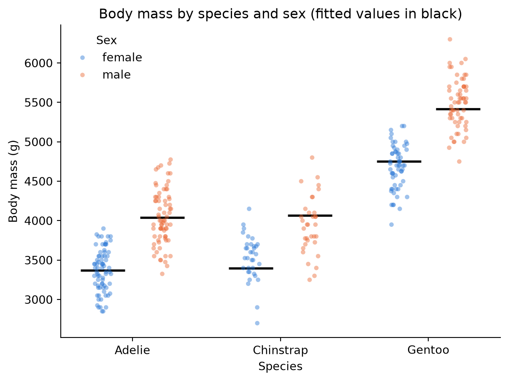

| Estimate | Std. Error | t | p-value | |
|---|---|---|---|---|
| Intercept | 3372.386808 | 31.427241 | 107.307759 | 4.341117e-258 |
| Is Male | 667.555152 | 34.703974 | 19.235697 | 8.729411e-56 |
| Is Chinstrap | 26.923852 | 46.483414 | 0.579214 | 5.628410e-01 |
| Is Gentoo | 1377.858030 | 39.104093 | 35.235648 | 1.051670e-113 |
Association Between Body Mass and Species
The Regression Model
We fit a regression model using all categorical variables:
\[ \text{Body Mass (g)} = \beta_{0} + \text{Is Male} \times \beta_{1} + \text{Is Chinstrap} \times \beta_{2} + \text{Is Gentoo} \times \beta_{3} \]
- Here \(\beta_{0}\) is the average body mass of a female Adelie penguin. This is the reference group.
- The coefficient \(\beta_{1}\) captures the mean shift due to being a male penguin.
- The coefficient \(\beta_{2}\) captures the mean shift due to being a Chinstrap penguin.
- The coefficient \(\beta_{3}\) captures the mean shift due to being a Gentoo penguin.
There is no proper slope interpretation here because none of independent variables are continuous. Nevertheless, this model illustrates how linear regression models averages, conditional on the predictors.
The Model Fit
We use the statsmodels package to fit a regression model using the formula interface, similar to R’s interface. It’s good practice to summarize the fit of any model; a standard way of doing this for linear regression is to construct a regression table.
- The fitted
modelobject in the code stores all the information we need. It was used to create this plot. - The standard errors can be used to construct confidence intervals around our estimates \(\beta_{j}\).
- The \(t\)-statistics are associated with hypothesis tests. Specifically, we use them to assess whether each \(\beta_{j} = 0\) (null hypothesis). That is, we test each coefficient one at a time.
- In practice, we should adjust the \(p\)-values due to our multiple comparisons.
Visualization

- The reference group are female Adelie penguins.
- Changing each categorical variable,
speciesorsex, yields a change in the mean. - Adelie and Chinstrap penguins have similar body masses. This explains why
"Is Chinstrap"has little effect (small coefficient) and relatively large \(p\)-value.
Issues
- In the EDA page,
femalewas mapped to orange andmalewas mapped to blue. Here the colors are switched. - Our Quarto pages have to reload nearly the same packages in each case.
- Some of the plots are long. Editing some of the options/settings is fragile because we hardcoded some values instead of using variables.
- What if we chose to analyze a different regression, or we added a continuous variable to the model? The regression table code would have to change in a few places.
The fix for most of these problems (and possibly others not listed here) is to put most of the project code inside functions.